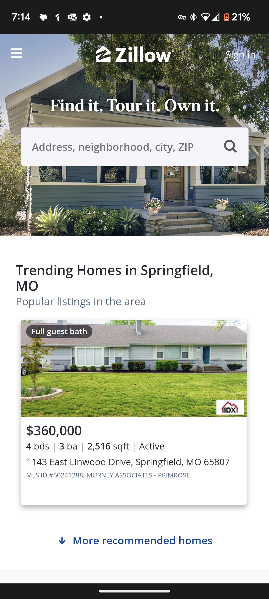

White Space and Clean Design
Uber
The Design Principle of White Space and Clean Design is exemplified in this website because I feel that it is very simple in its design. There is a good amount of white space between all the components of the page and nothing on the page feels too close together or to far apart.
Hick's Law
Uber
The Design Principle of Hick's Law is exemplified in this website because I feel that there really isn't too many choices to be made on this hompage. There really is only two major decisions. You can either put in your address of interest or you have the choice of browsing a random area that the site has chosen. This really lessens the stress of more decisions than necessary.
PARC: Alignment
Uber
The Design Principle of PARC, particularly alignment, is exemplified in this website because I feel that looking at this website is nice and uniform. All of the major choices on this page are all aligned from the top to the bottom to make it easy to look at each of the items one by one to know where it is that you want to go next.